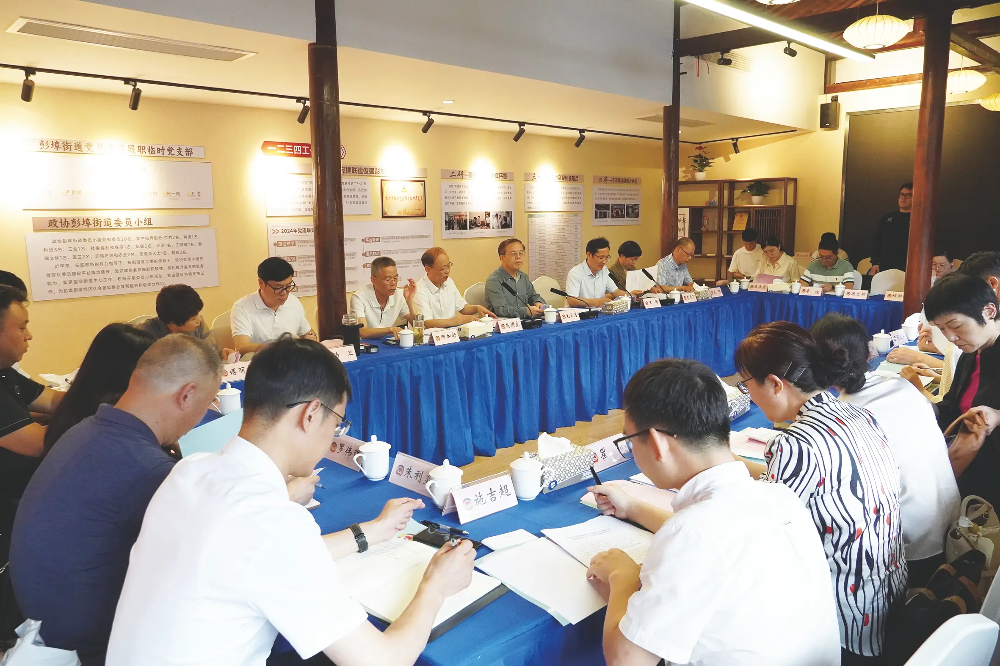

杭州市新时代协商民主实践中心上城分中心
上城区政协坚持以习近平新时代中国特色社会主义思想为指导，深入学习贯彻党的二十大和二十届历次全会精神，锚定新时代人民政协新方位新使命，与市政协新时代协商民主实践中心同频共振、同向发力。立足区域禀赋，整合优势资源，将委员一线履职、政协工作延伸、基层社会治理三者有机结合，"三位一体"建设协商民主实践平台，推动"一南一北"两大分中心建立常态化运营机制，着力打造"一中心一主题、多站点互联动"的平台矩阵，全面提升阵地履职效能，推动协商民主向下扎根、向实发展。

🏛️彭埠分中心
上城区（彭埠）新时代协商民主实践中心
彭埠街道罗家老宅 · 成立于 2023年3月

紫阳分中心
上城区（紫阳）新时代协商民主实践中心
紫阳西泠书房 · 启动于 2025年底
📸 活动现场